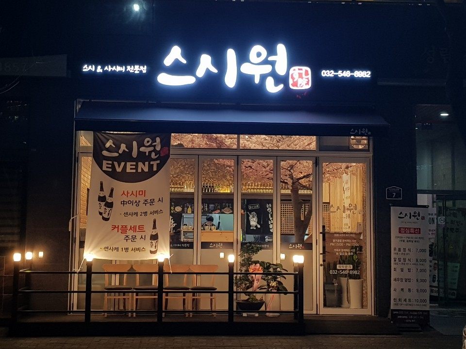
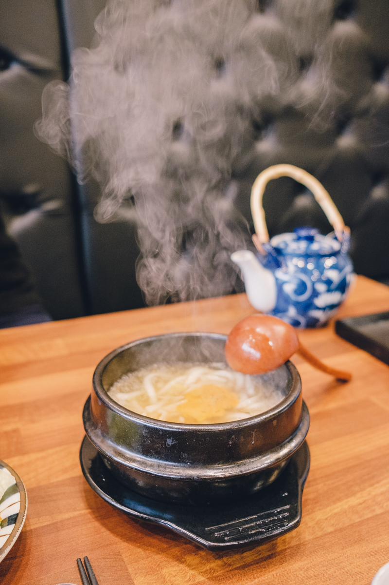
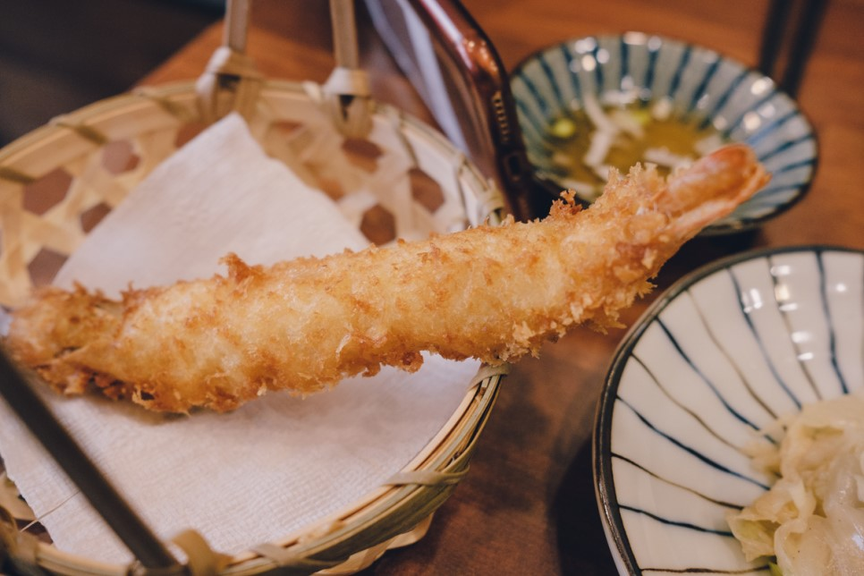
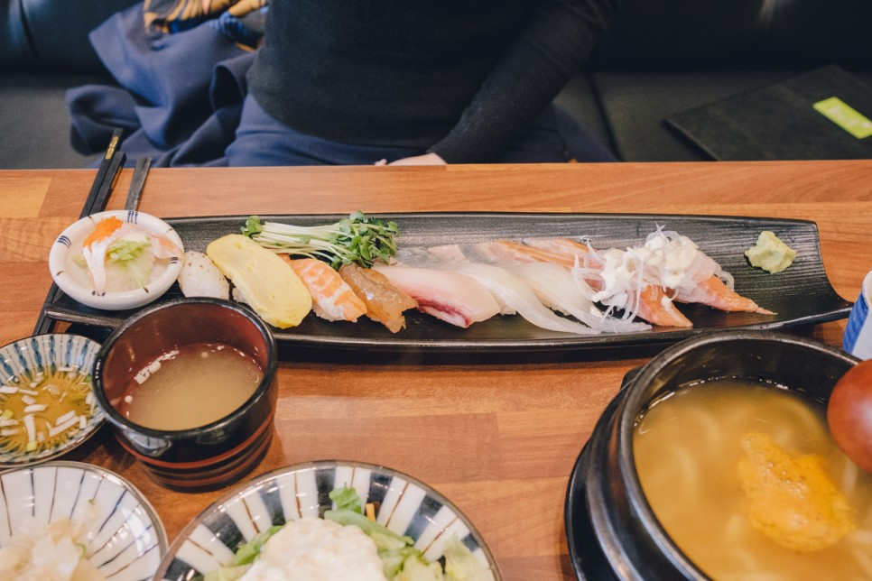

박재형-스시원
주소: 인천 계양구 오조산로57번길 7
Operation hours: 11:00~22:00 (일요일 휴무)
지금 스시원이 위치하고 있는 이 자리는 원래 잘 망하기로 유명한 자리였다. 이 상가가 생긴 이후로 국수집, 베트남 음식집 등 수많은 가게가 자리했었지만, 모두 1년을 채 버티지 못하고 망해버리고 말았다. 그런데, 망하기로 유명한 이 전설을 드디어 깨부순 음식점이 있다. 바로 오늘 소개할 스시집. 스시원이다.

스시원은 생긴 지 얼마 지나지 않아 식사시간마다 자리가 꽉 차는 핫 플레이스가 되었다. 처음에는 이 가게 역시 초반에만 핫하고 금방 망하겠거니 했는데, 몇 달째 여전히 핫 플레이스 그대로였고, 호기심에 처음 가보게 되었다.
스시원에서 제일 잘나가는 메뉴는 9900원짜리 런치세트이다. 10000원도 안되는 가격일뿐더러 구성도 알차 본인은 항상 스시원을 갈 때마다 런치세트를 시킨다. (참고로 이 런치세트는 말만 런치세트지 저녁에도 주문이 가능하다. 우리 동네 일부 주민들만 아는 꿀팁.)
먼저 런치세트는 우동 한사발로 시작한다. 우동그릇이 아니라 뚝배기에 담겨져 나오는 게 포인트이다. 건더기는 별로 없지만, 오히려 최소화된 건더기가 깔끔한 느낌을 준다. 입가심용으로 최적. 또 우동뿐만 아니라 미소장국도 따로 주는데, 국물을 좋아하는 필자는 우동 국물과 미소장국을 번갈아 마실 수 있어 마냥 행복하다.
그렇게 우동으로 입가심이 끝나갈 때 쯤, 드디어 대망의 런치세트가 도착한다.

먼저 본격적으로 초밥을 들기 전에, 초밥과 함께 나오는 이 왕새우튀김을 먹어야 한다. 그냥 새우튀김도 아니고 무려 왕새우튀김이다. 여타 다른 초밥집과는 다르게 튀김옷이 눅눅하지 않고 살아 있으며, 머리부터 꼬리까지 통째로 튀겨 그 고소함은 배가 된다. 머리도 껍질을 벗겨 놓아 부담스럽지 않고 고소하게 먹을 수 있다.
 그렇게 왕새우튀김의 차례가 끝나면, 드디어 대망의 초밥을 먹는다. 초밥은 참치, 새우, 생새우, 연어, 광어, 오징어 등 다양한 종류로 구성되어 있다. 총 9조각이 나오는데 초밥의 종류가 단순하지 않고 다양해 다시 한 번 런치세트가 만원도 하지 않는다는 사실에 놀란다. 참, 타코와사비도 있다. 초밥의 제각각 다른 식감과 맛이 입안을 즐겁게 해준다. 연어초밥은 말할 것도 없고, 특히 얇게 떠서 속이 투명하게 보이는 광어초밥과, 한 조각만이 나오는 참치초밥의 맛이 매우 훌륭하다. 또 본인은 와사비를 못먹어 항상 초밥을 시킬 때 와사비를 빼고 주문하는데, 스시원의 타코와사비만은 맛있게 흡입한다. 그렇게 타코와사비를 끝으로, 눈과 입이 즐거웠던 런치세트 식사는 마무리된다.
스시원이 메스컴에 소개될 정도로 눈에 띄는 맛집은 아니지만, 쉽게 보기 힘든 맛있고 저렴한 집인 것만큼은 확실하다.
혹시 인천 계양구에 들을 일이 있다면 스시원을 꼭 기억해주시길.